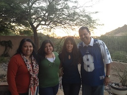

I was born in New Jersey, and then moved to Scottsdale, Arizona when I was eight years old. After graduating from high school there, I attended Georgetown University in Washington DC. At Georgetown, I studied both math and computer science and completed a research project in computer science with Dr. Lisa Singh.
After receiving my B.S., I lived in Arlington, VA and worked at The MITRE Corporation for two years before deciding to head to graduate school. I have been living in New Haven, CT for two years now, pursuing my PhD in computer science at Yale University. My parents still reside in Arizona, and I have one sister who lives in Washington DC.
I have been dancing my whole life. When I was younger, I was a tap dancer, and since going to college, I have been doing bhangra. Bhangra is a folk dance that originates from the Punjab region of India. I love bhangra because it embodies the intersection of energy and grace. I currently dance with Yale Jashan Bhangra, and I thoroughly enjoy being a part of such an enthusiastic and dedicated team!